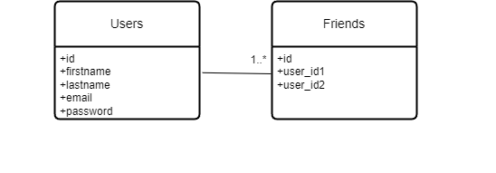
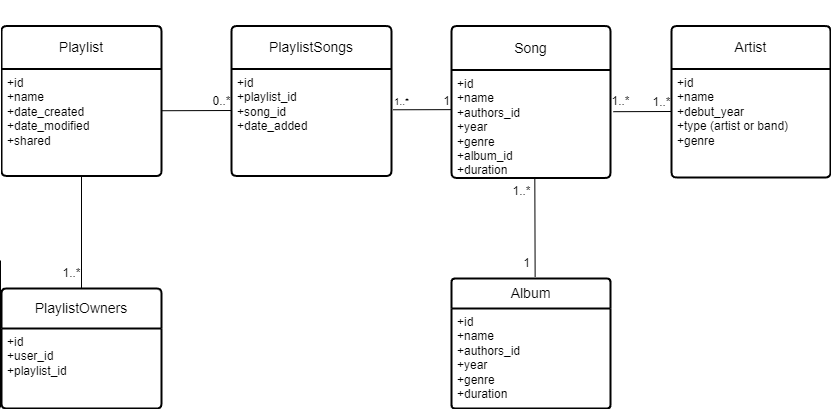

Vire is a system able to "intelligently" recommend by exposing a SPARQL endpoint - vinyl music records according to various criteria: user preferences (specified via controlled natural language constructs such as "I always like/love/prefer classical music, especially opera music by Rossini or Verdi and performed by Angela Gheorghiu or Juan Diego Flórez; I sometimes like progressive rock and post-rock; I like only metal albums released before 2000; I always dislike/hate rap and hip-hop; I dislike songs produced by Flood in the last 25 years"), past song purchases on various music stores, playlists - available online via music streaming services: Last.fm and alternative solutions and locally - for instance, by uploading a JSPF/XSPF document. The playlists could be created by the user or shared by her/his virtual "friends" (consider at least one social network). The system will use several music-related knowledge models and available public resources: Discogs, MusicBrainz, Musicmoz Music Styles.
For the user service, it's necessary to retain certain user-related data alongside their friendship connections.
For the playlist service, we need relevant data about each playlist, including ownership details, song contents, artists, albums, and relevant information associated with each entity.

{
"user_id":"1",
"preferences":[
{
"type_of_feeling":"loves",
"artists":["The Beatles"],
"albums":"Let It Be",
"between":{"first_year":"1960", "second_year":"1980"},
"date_added":"16-apr-2021",
"source":"written preference",
},
{
"type_of_feeling":"likes",
"artists":["Justin Timberlake"],
"before_year":"2005",
"date_added":"10-June-2020",
"source":"past playlist"
},
{
"type_of_feeling":"hates",
"genre":["electric"],
"after_year":"1990",
"date_added":"10-may-2017",
"source":"written preference",
},
{
"type_of_feeling":"dislikes",
"genre":["hip-hop"],
"year":"2000",
"date_added":"1-sept-2021",
"source":"written preference",
}
]
}
Initially, users have the option to either sign up for a new account or log in with an existing one. Once logged in, they have the capability to create music playlists, import existing ones using a JSPF file, or link their last.fm profile.
They can also link their account to their music store profile, which allows them to add songs they've previously purchased. Users also have the opportunity to connect with friends and share their musical tastes, and combine their playlists. The users can also add description for they musical taste for example adding phrases like: "I sometimes like progressive rock and post-rock; I like only metal albums released before 2000; I always dislike/hate rap and hip-hop; I dislike songs produced by Flood in the last 25 years".
The application's main function is to integrate these features to provide personalized vinyl recommendations based on these considerations.